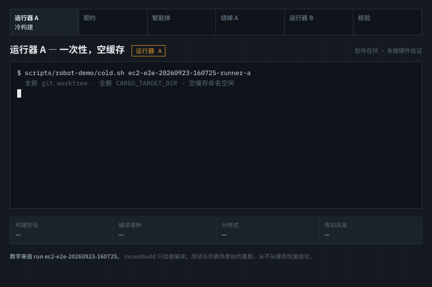

Seeded build undetected
tick 12 approach age=600ms PERMIT tick 22 descend age=600ms PERMIT tick 32 grasp age=600ms PERMIT tick 48 lift age=600ms PERMIT episode_end success=true cube_height 0.9985 m protected assertion: FAIL
A Rust safety gate, a simulated Panda arm, disposable runners, and proof bound to the actual executable.
The seeded gate never checked observation age. Four motion segments ran on information that was already 600 ms old. The cube still lifted, so an ordinary success check stayed green.
tick 12 approach age=600ms PERMIT tick 22 descend age=600ms PERMIT tick 32 grasp age=600ms PERMIT tick 48 lift age=600ms PERMIT episode_end success=true cube_height 0.9985 m protected assertion: FAIL
tick 12 approach age=600ms REJECT reason StalePerception task dispatches 0 arm command held episode outcome rejected_stale protected assertion: PASS
A cold distributed build on a throwaway runner, the seeded failure, a bounded agent patch, the runner destroyed, then a brand-new runner rebuilding from the cache the parent warmed. Recorded numbers throughout, including the one that did not go our way.

Five cube placements against three observation ages, plus emergency stop and protocol timeout. Every cell is a completed robosuite run, not an expected result.
| Cube placement | 0 ms observation | 50 ms observation | 600 ms observation |
|---|---|---|---|
| center | lifted · 54 ticks | lifted · 56 ticks | refused · tick 12 |
| left | lifted · 52 ticks | lifted · 53 ticks | refused · tick 12 |
| right | lifted · 56 ticks | lifted · 59 ticks | refused · tick 12 |
| near | lifted · 55 ticks | lifted · 57 ticks | refused · tick 12 |
| far | lifted · 55 ticks | lifted · 55 ticks | refused · tick 12 |
This is software-in-the-loop. The site says exactly what the evidence establishes—and what remains downstream—because a green check without a visible boundary is not evidence.
Burn the runner.
Keep the proof.
Spare the robot.